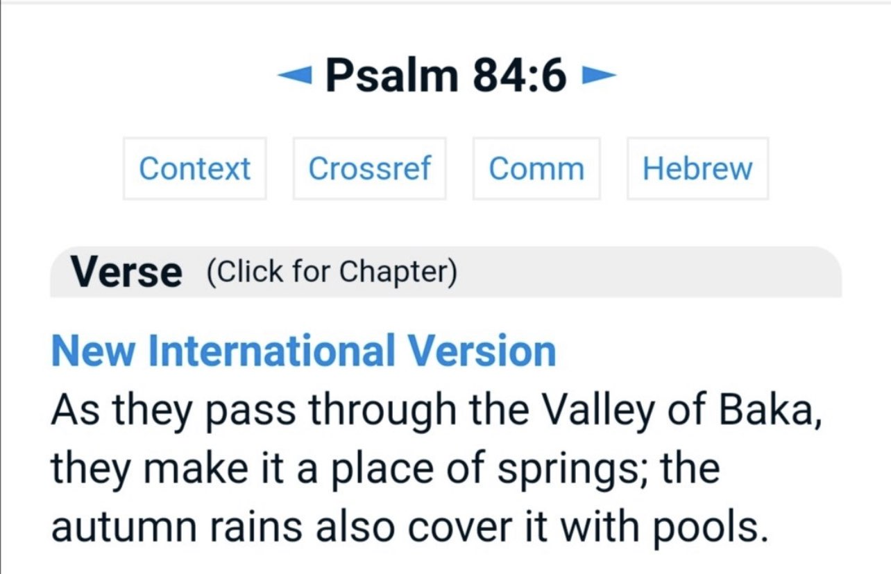
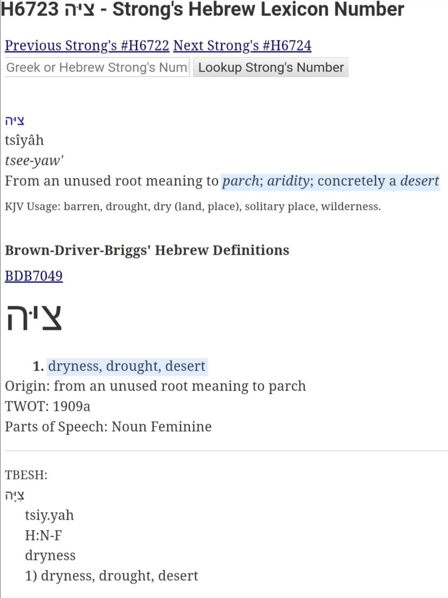
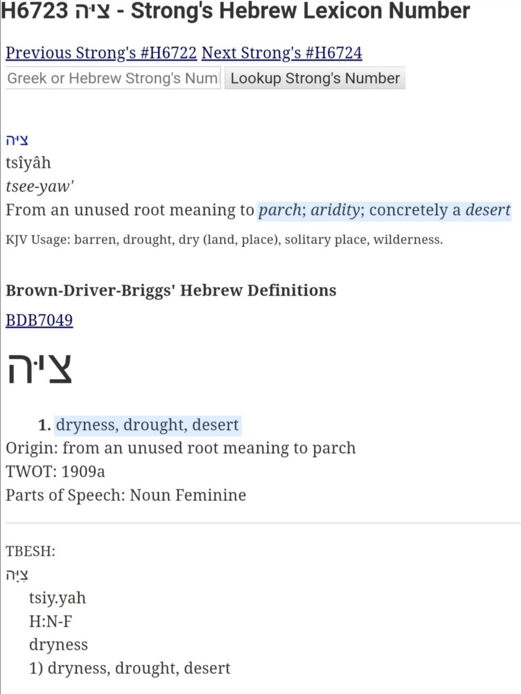
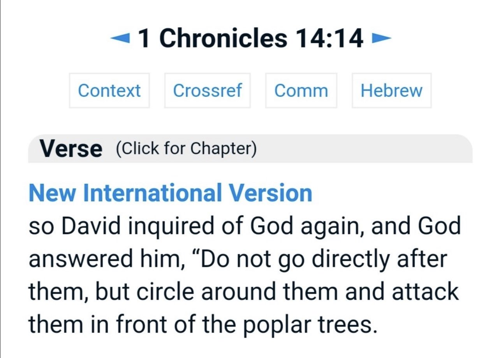
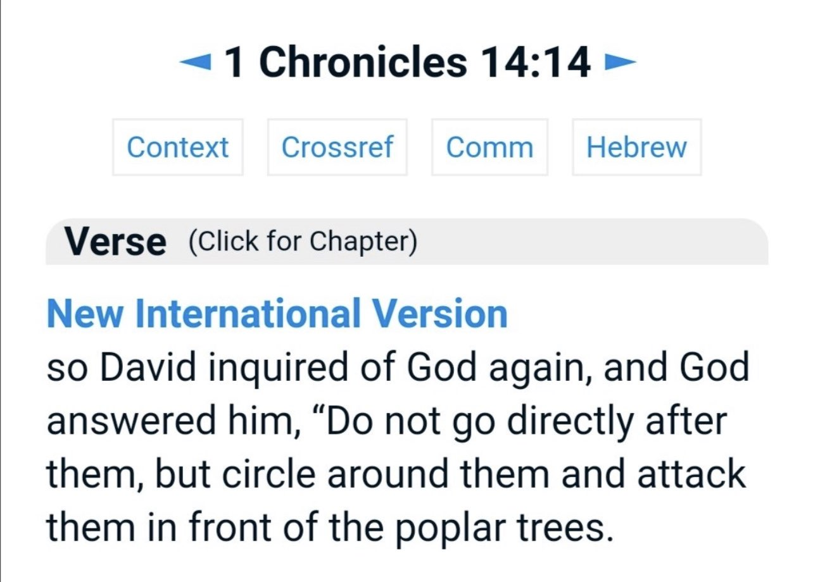

Im not claiming that hajj is in the bible but very interesting stuff below⬇️
 Bacca is one of the names of Makkah, so this is an answer to those who claim it was built during the time of the prophet pbuh
Aal-E-Imran, Ayah 96
إِنَّ أَوَّلَ بَیۡتࣲ وُضِعَ لِلنَّاسِ لَلَّذِی بِبَكَّةَ مُبَارَكࣰا وَهُدࣰى لِّلۡعَـٰلَمِینَ﴿ ٩٦ ﴾
• Dr Mustafa Khattab (The Clear Quran):
Surely the first House ˹of worship˺ established for humanity is the one at Bakkah—a blessed sanctuary and a guide for ˹all˺ people.
•Tafsir ibn Kathir
Allah said,
إِنَّ أَوَّلَ بَيْتٍ وُضِعَ لِلنَّاسِ
(Verily, the first House appointed for mankind) for all people, for their acts of worship and religious rituals. They go around the House in Tawaf, pray in its vicinity and remain in its area in Itikaf.
لَلَّذِى بِبَكَّةَ
(was that at Bakkah,) meaning, the Kabah that was built by Ibrahim Al-Khalil, whose religion the Jews and Christians claim they follow. However, they do not perform Hajj to the house that Ibrahim built by Allah's command, and to which he invited the people to perform Hajj.
Bacca is one of the names of Makkah, so this is an answer to those who claim it was built during the time of the prophet pbuh
Aal-E-Imran, Ayah 96
إِنَّ أَوَّلَ بَیۡتࣲ وُضِعَ لِلنَّاسِ لَلَّذِی بِبَكَّةَ مُبَارَكࣰا وَهُدࣰى لِّلۡعَـٰلَمِینَ﴿ ٩٦ ﴾
• Dr Mustafa Khattab (The Clear Quran):
Surely the first House ˹of worship˺ established for humanity is the one at Bakkah—a blessed sanctuary and a guide for ˹all˺ people.
•Tafsir ibn Kathir
Allah said,
إِنَّ أَوَّلَ بَيْتٍ وُضِعَ لِلنَّاسِ
(Verily, the first House appointed for mankind) for all people, for their acts of worship and religious rituals. They go around the House in Tawaf, pray in its vicinity and remain in its area in Itikaf.
لَلَّذِى بِبَكَّةَ
(was that at Bakkah,) meaning, the Kabah that was built by Ibrahim Al-Khalil, whose religion the Jews and Christians claim they follow. However, they do not perform Hajj to the house that Ibrahim built by Allah's command, and to which he invited the people to perform Hajj.
Valley of Baka and the Law Giver Prophecy (Psalm 84:6)
King David says in Psalm 84 about People being Blessed who dwell in the,
‎a. “Bayth” (House) of God.
b. They Do Pilgrimage
c. Pass by a Valley called “Baka”

d. The Aramaic goes on saying they make it “a Dwelling place”
e. The Aramaic and LXX adds, the “Law-giver” Shall grant blessings
We Know from the Qur'an
a. Kaa'ba is the House of God
b. Muslims do pilgrimage here
c. Bakkah is the original name of Mecca
“A single day here is better than a Thousand elsewhere,”
The Prophet ﷺ said a single Salah (prayer) at his mosque and Makkah is more than 1,000 & 100,000 elsewhere
We know King David used to go to the
a) House of God
b) do Hajj (Pilgrimage)
c) Dwelt in Arabia.
Makes even more sense,
Moses went to Mount Sinai (Which is Arabia) and Did “Hajj” (Pilgrimage, going around in Circles, Circuits)
Another coincidence?
For more info on this check out this video
👇
https://m.youtube.com/watch?v=IW0FrgSd80k&t=277s
Interestingly in Psalm 84:6 Aramaic and LXX version we have a “Law-giver” (as saw above)
In Psalm elsewhere we have a Law-giver for the Gentiles
In Genesis 33 we know of a Law-giver Prophecy from Paran (Augustine of Hippo said this is a Future Prophecy)
Another coincidence?
In Isaiah 60, God talks about Light shining, Nations coming, especially Kedar sacrificing at God's alter and glorifying his House.
When did Arabs went to God's alter sacrificing and glorifying his house? It's obviously talking about Kaa'ba, as and we sacrifice at Hajj
In the book of Jubilees and Asumption of Moses (books which the Authors of the Bible cite) mentions Abraham (re)building the House of God at Mecca.
The Historian pre-dating Muhammad ﷺ mentions about special monument Ishmaelites go to,
‎“Diodorus of Sicily”
We have the Holy Zamzam water Well, in Gen 16:14 as well.
Now answering some common objections,
a. “It says Valley of Weeping in Psalm 84”
Even if you translate “Bakkah” into Weeping, it'll still make sense, because Ishmael and his mother wept there.
Same root word.
b. “Bakkah mean Balsam Tree”
Even if you translate it that way, we know from the Bible Ishmaelites were carrying Balsam Trees & Scholars link theese Trees with Mecca.
 c. “They just Pass by the Valley, the real destination is Israel Zion”
I've showed the Aramaic version adds they make Bakkah a Dwelling place,
Zion means Parch land, desert, Monument etc. It's use for alot other places in the Bible for other than Israel, like ark of Tent, etc.

d. “Bakka is not Mecca, because in the parallel account in 2 Samuel 5:23 it shows Bakkah was in Palestine”
The Vulgate say “pear trees” not Bakka
Biblical Translations themselve are uncertain
Even in the parallel account of 1 Chronicles 14, it's pear trees not “Bacca”, Jerome held the same view.
c. “They just Pass by the Valley, the real destination is Israel Zion”
I've showed the Aramaic version adds they make Bakkah a Dwelling place,
Zion means Parch land, desert, Monument etc. It's use for alot other places in the Bible for other than Israel, like ark of Tent, etc.

d. “Bakka is not Mecca, because in the parallel account in 2 Samuel 5:23 it shows Bakkah was in Palestine”
The Vulgate say “pear trees” not Bakka
Biblical Translations themselve are uncertain
Even in the parallel account of 1 Chronicles 14, it's pear trees not “Bacca”, Jerome held the same view.
 
